Three seasons making a plane think for UBC AeroDesign — and the four years before that, trying to get invited.
In 2021, before I'd ever laid out a circuit board, I made a slide deck of everything I'd built in high school, for UBC's design teams. The last slide said this:
I will continue what I do despite several unsuccessful attempts, I know I have a lot more to learn. I hope UBC design team can give me an opportunity to learn from all the seniors, and do hands on projects under the proper guidance.
— “My Projects,” 2021. The last slide.
The unsuccessful attempts were mostly flight computers. Four of them, on protoboard, for a water rocket that never flew. Gen 1 was a servo timer and my first time soldering anything. Gen 3 had an SD card reader that “won't communicate with the arduino no matter what, I troubleshooted the code, replaced the board, replaced the arduino, added capacitors. Nothing worked.” Gen 4 ended with a line I wrote at eighteen that aged better than most things I wrote at eighteen:
In the future, I would like to further refine the code and also learn how to design printed circuit board.
— Flight computer, Gen 4, July 2021
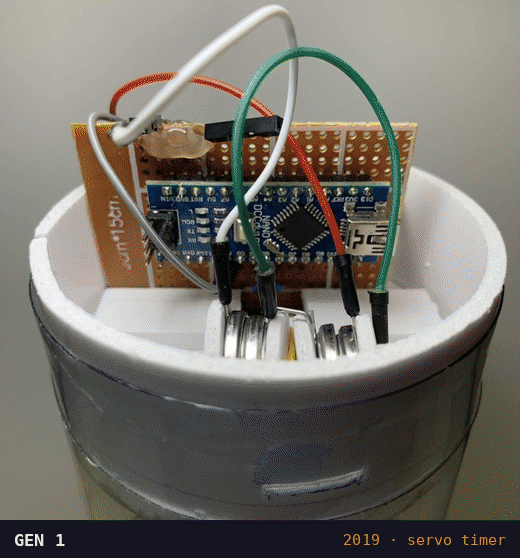
The design team said yes. This is what I did with it.
01The brief
By 2023 I'd spent two seasons on the mechanical side — wing ribs, carbon layups, airfoils — and was about to become Power & Controls Lead for Shadow, the team's SAE Aero Design Advanced Class entry. The brief arrived the way all good briefs arrive.
For the record, at the January design review that season, the Power & Controls budget had $433.61 left of $1,500.00. About 28%. Money was, in a sense, no longer an issue.
The plane needed a kill switch, two 16.8 V batteries, a 2.4 GHz ELRS control link, ESC PWM, 900 MHz telemetry, a cellular video stream, and MAVLink to the flight controller. My slide for this had one label on it, in red, pointing at the whole pile: “These need to connect nicely together.”
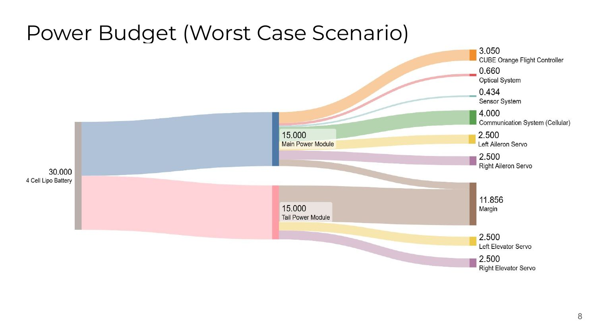
02The rat's nest
In PCB design, the rat's nest is the tangle of thin lines the software draws before you've routed anything — every connection that still needs to be made, going straight through everything else. It is a to-do list shaped like a mess.
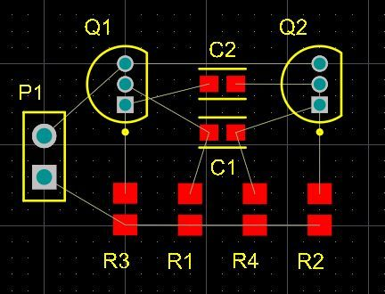
On the plane before Shadow, the rat's nest was the plane. My slide for it was titled “Flight Electronics — Old — The Rats Nest,” had a large red X over the photo, and said, in its entirety, “Bet You didnt see this.”
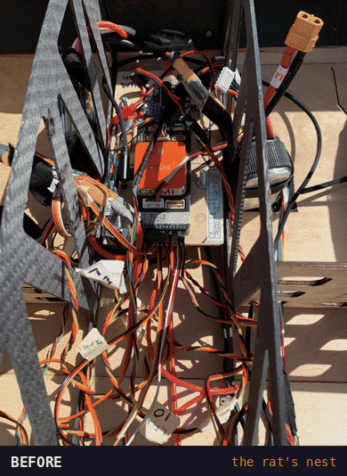
So the job wasn't really “design some boards.” It was: route the rat's nest. Every connection in the plane, made once, on purpose, on copper.
03The brain
I split the electrical system the way you'd split a body, which is also how the slides were titled that year: a central nervous system, a brain, a heart, and some muscle. It started as a joke and turned out to be a pretty good architecture.
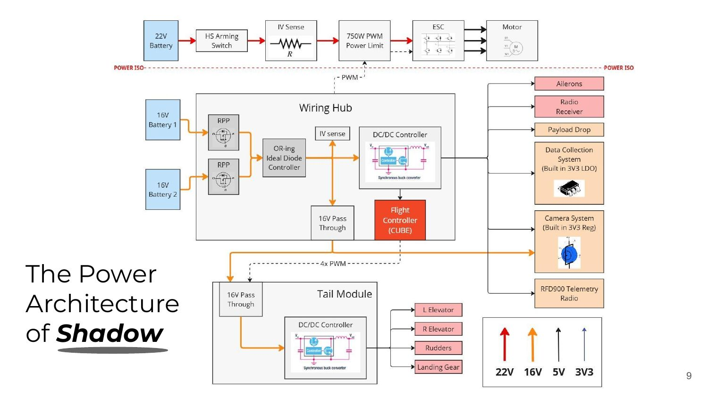
“Motherboard” of the plane.
Everything connects through the wiring hub.
Centralized piece of hardware for all power distribution and connections.
Simplifies previous architecture; consists of only what we need.
— Wiring Hub: The Brain. Avionics design review, Jan 2024
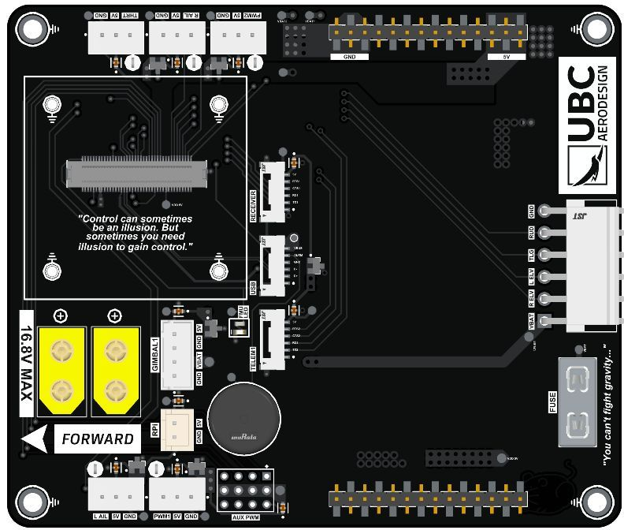
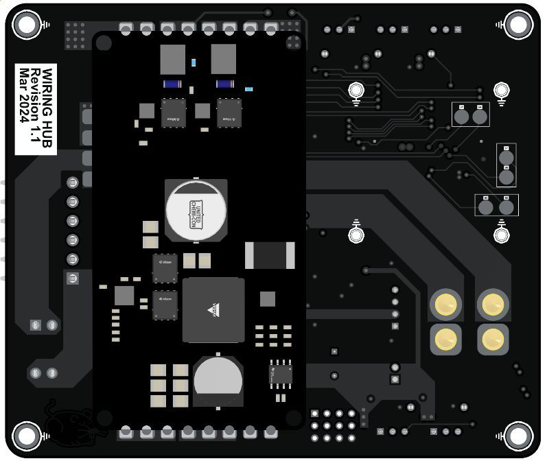
Four layers. Top carries vertical signals, test points, connectors and indicator LEDs. Bottom carries horizontal signals, the high-power traces, and spare GPIO. Vertical on one side, horizontal on the other, so nothing has to fight for a lane.
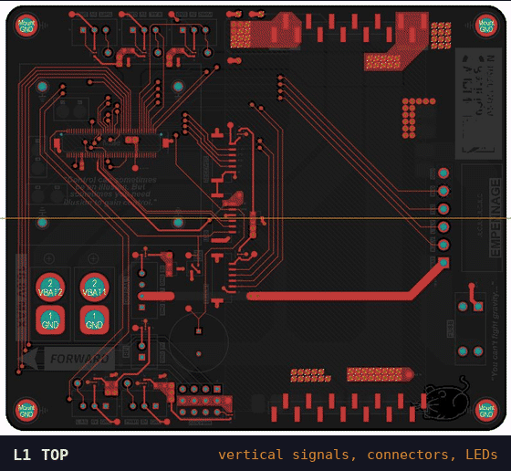
The hub bolts into the fuselage on the camera gimbal mount, with room for vibration-damping feet so it doesn't shake noise into the sensor board. The tail got its own small board — the empennage hub, “the muscle” — which feeds the elevator, rudder and tail gear, and unplugs cleanly for travel.
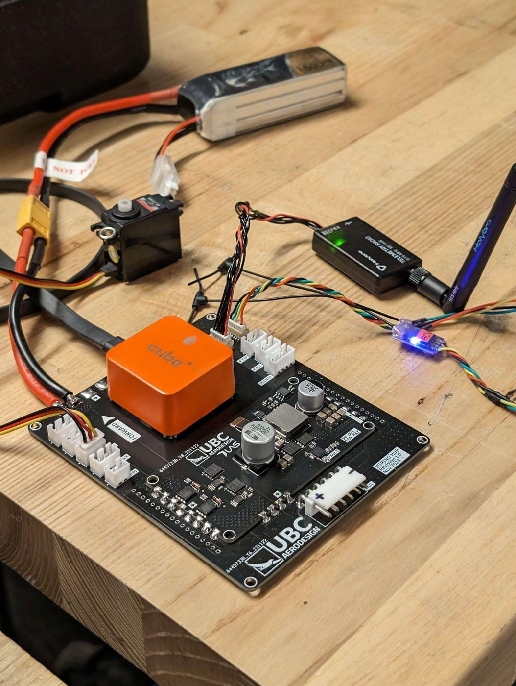
04The heart
The power module turns a 4-cell LiPo into a clean 5 V rail for everything on the plane. The goal on the slide was two words: Powers Shadow. It took more than one try.
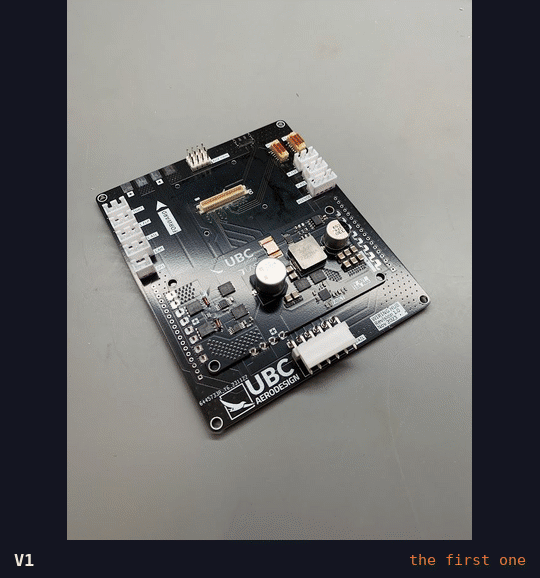
The controller is an ISL8117A, a synchronous buck controller I picked for a reason I wrote down with total honesty: “Cheap on JLCPCB: $0.96 / unit.” Everything else came out of the datasheet and a spreadsheet:
The battery voltage monitor went through an OP07 buffer, which turned out not to be rail-to-rail: its output bottomed out at 1.27 V. I listed my options on the slide like a responsible engineer:
And it was — 871 ADC counts between a full pack and a dead one is plenty to land a plane on.
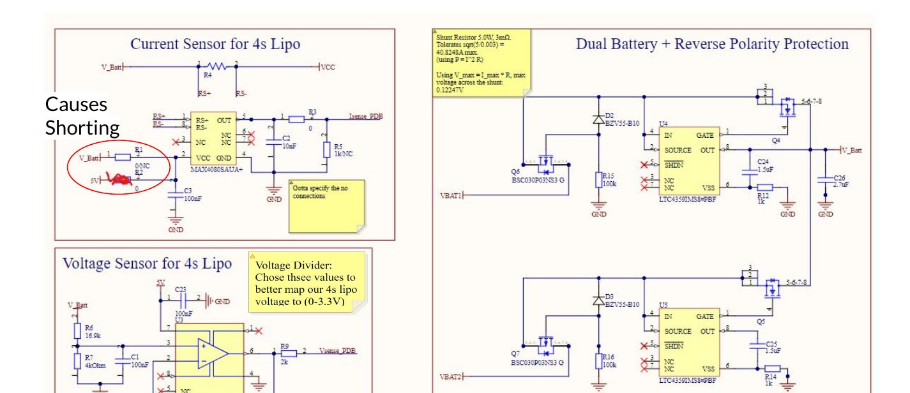
05The ECG
If the board is the heart, the oscilloscope is the ECG. Three tests: stall a servo on purpose and watch the rail, scope the output, and run both batteries at once to check the OR-ing hands over cleanly.
↑ An illustration for the joke. The real measurements are below.
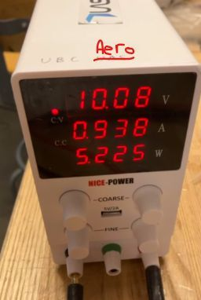
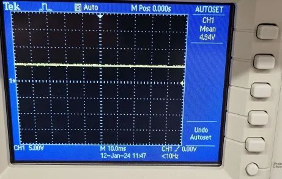
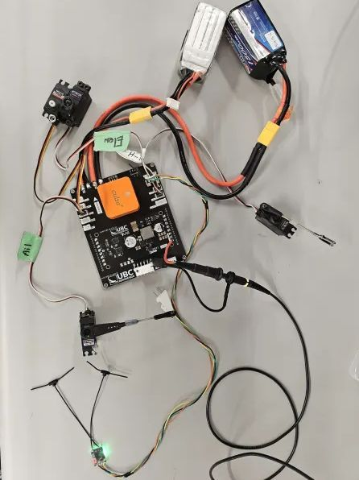
The patient was stable. The patient was about to go to Texas.
06Nobody said it was easy
Here is the other text message from that season.
When I reviewed the season afterwards, I put this under a heading I'd recommend to anyone: “What made me a bad engineer at the time?” The second bullet is the one I think about:
Dismissed a member's concern about a critical failure … causing a critical failure;
— Technical Show and Tell, self-review
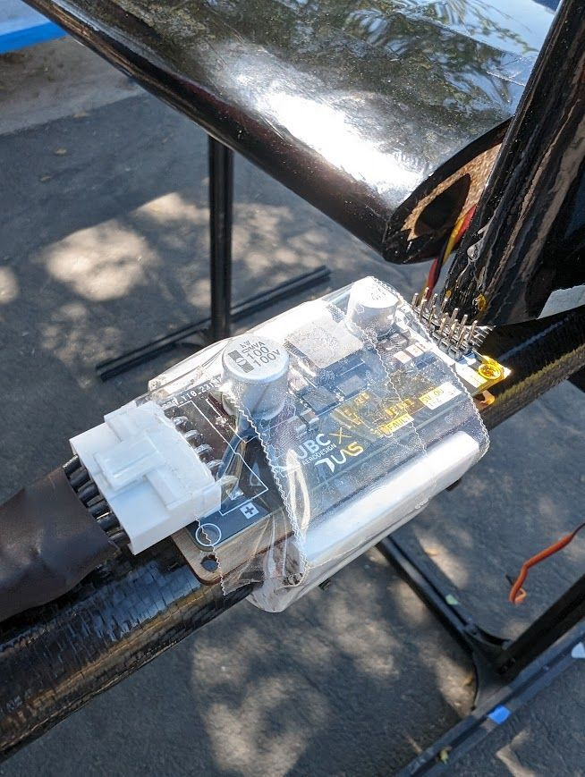
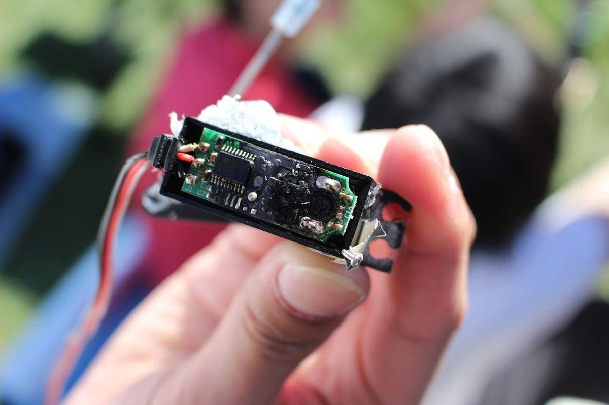
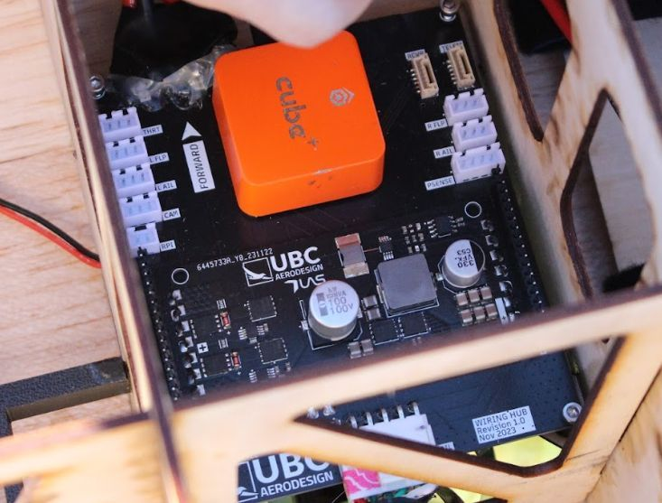
A shoot-through is when both switches in a buck converter's half-bridge are on at the same moment, so the input is shorted straight to ground through them. It is exactly as good for four servos as it sounds. The rest of the list, from the same slide:
Hold onto that list. It comes back.
07Things worked
In my show-and-tell deck, after the failures, there's a slide titled “Things Worked.” It's one photo, no bullet points. You have to look for the plane.
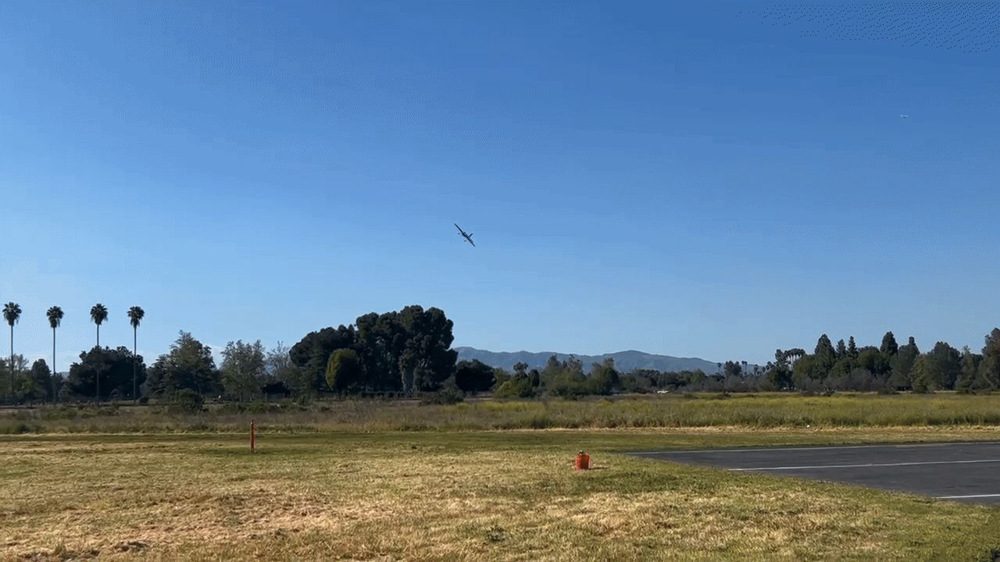
Shadow placed 5th overall in the Advanced Class. My evaluation of whether I'd actually met the brief was three columns, which I stole from a western:
“Fixated on technicals, not the systems,” the review says. “A poorly optimized design would've worked anyway.” Which is humbling to read about your own heart surgery.
08The transplant
The next season I became Avionics Lead — about thirty people across three subteams, flying an autonomous payload-delivery mission. The power board got redesigned from scratch with B. Liu, and the design brief was, more or less, that list from the autopsy.
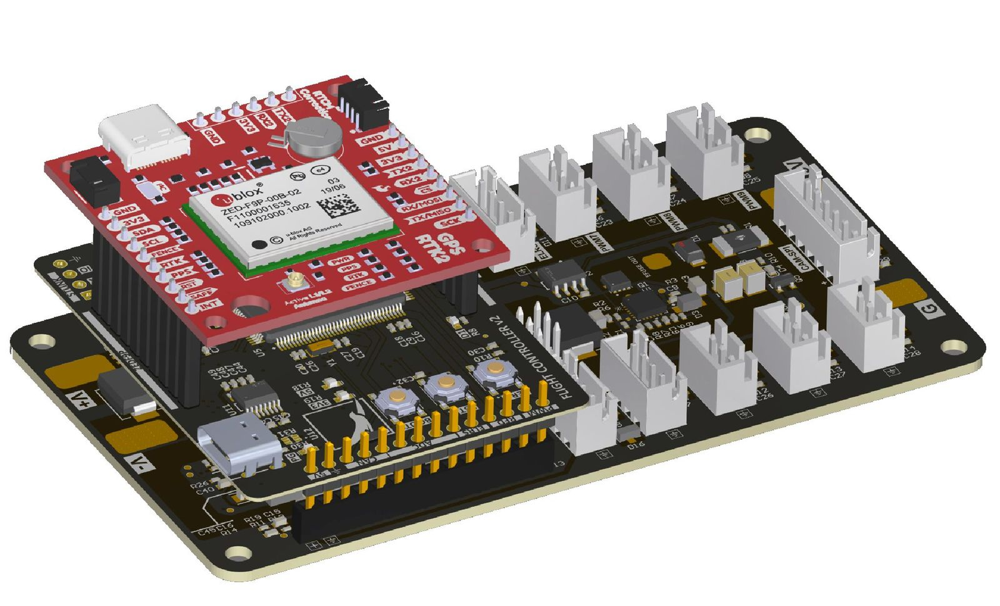
| 2024, what broke | 2025, what changed | |
|---|---|---|
| Lack of output protection; a shoot-through took out four servos | → | TPS25983 e-fuse on the input and the output |
| Cheap out on connectors | → | IO connectors with mechanical lock features |
| No datalog for troubleshooting | → | Voltage and current sense, sent over telemetry |
| Buck controller running low on stock | → | A new buck, the LM5146, still designed for 5 V at 15 A |
| Two-layer power modules | → | Six-layer stackup: one power, three ground, two signal |
Input range is 7 V to 25 V — 4-cell LiPo or smaller, as the competition rules define — powering the servos, camera, remote airspeed sensors, GNSS, radios and flight controller. The big black part in the middle is the LM5146's 3.3 µH inductor.
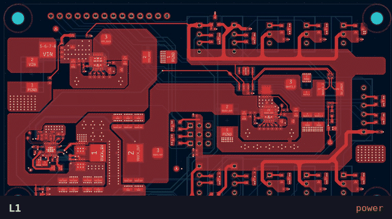
And because this whole site is a cassette, the board has a side A and a side B. Every connector's pinout is printed on the back, where the person plugging it in at 5 AM can actually read it.
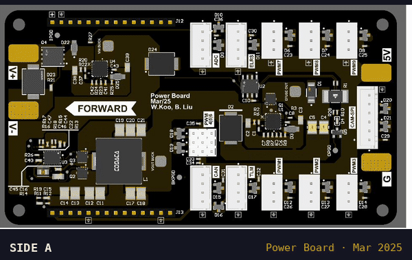
I don't have waveforms for this one. From my own portfolio, verbatim: “No waveforms or data to show due to lack of proper equipment.” I wrote out the test plan anyway, and the gear I'd need to run it — starting with an electronic load of at least 200 W.
So the next thing I built was an electronic load.
09Teaching the rat's nest
In January 2025, Anna and I ran the team's PCB design workshop. A few years earlier I was the one asking the seniors to teach me. This is roughly what I told the room.
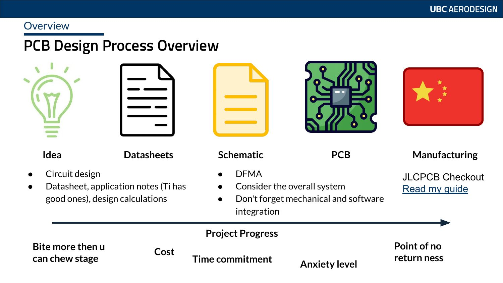
Copy the Eval Board schematic, but make sure u understand how it works!
Make sure to solder it with 63/37 Eutectic leaded solder with ample flux so it doesn't start running away
Get Good
— PCB Design workshop, Jan 2025
The schematic section of that workshop had a slide titled “How Do I Properly Make A Schematic Without F***ing Up and Bringing Great Shame.” The answer on the slide was two arrows: read the datasheets, and copy the eval board, but understand it. I've never found a better one.
And the routing slide, which is the whole story of this page in two sentences:
At first, all footprints will be scattered on a grid, with a Rats Nest showing what connections need to be made.
Job of the engineer is to route them all.
— PCB Design workshop, Jan 2025
10Lights off
The things I'd do differently are the same things I wrote down in 2024, and they're mostly not about circuits: manage time, money and people; know my limits; hold design reviews; do the failure-mode analysis; run the integration tests. And when someone texts at 5 AM that they think there's a problem — believe them.